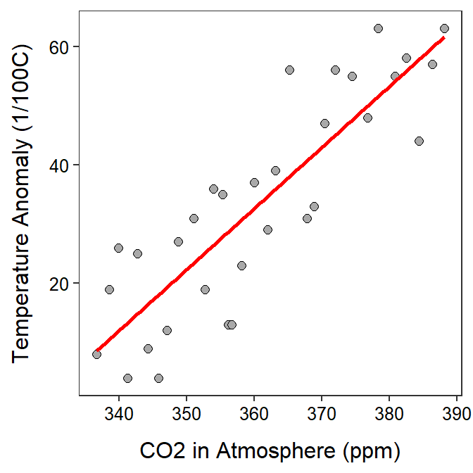

The slope, intercept, and r2 values, along with a scatterplot with the best-fit line, needed to perform a linear regression can all be computed with R if the raw data are available as they were here. These results can be used to answer the 12 questions I usually ask in linear regression as demonstrated in the annotations for the linear regression class example.
The data are loaded below. Note the variables we will use here are Temp and CO2.
> dfobj <- read.csv("http://derekogle.com/NCMTH107/modules/CE/GSI_data.csv")
> str(dfobj)'data.frame': 32 obs. of 4 variables:
$ Year : int 1979 1980 1981 1982 1983 1984 1985 1986 1987 1988 ...
$ Temp : int 8 19 26 4 25 9 4 12 27 31 ...
$ CO2 : num 337 339 340 341 343 ...
$ SolarIrradiance: num 1366 1367 1367 1366 1366 ...> headtail(dfobj) Year Temp CO2 SolarIrradiance
1 1979 8 336.67 1366.43
2 1980 19 338.57 1366.51
3 1981 26 339.92 1366.51
30 2008 44 384.39 1365.27
31 2009 57 386.34 1365.25
32 2010 63 388.13 1365.46The best-fit line is found in r with lm() which takes a formula of the form qvarResp~qvarExpl, where qvarResp is the quantitative response variable and qvarExpl is the quantitative explanatory variable. Of course, the data= argument is also needed. The results should be saved into an object.
> ( lm1 <- lm(Temp~CO2,data=dfobj) )Coefficients:
(Intercept) CO2
-338.25 1.03 From this it is seen that the intercept is -338.25 and the slope is 1.03.
The r2 value is extracted from the saved object with rSquared().
> rSquared(lm1,digits=2)[1] 0.74The best-fit line can be added to a scatterplot with geom_smooth() including method="lm". A “confidence band” is added to the plot by default, but it can be removed by including se=FALSE.
> ggplot(data=dfobj,mapping=aes(x=CO2,y=Temp)) +
geom_point(pch=21,color="black",fill="darkgray",size=2) +
labs(x="CO2 in Atmosphere (ppm)",y="Temperature Anomaly (1/100C)") +
geom_smooth(method="lm",se=FALSE,color="red") +
theme_NCStats()`geom_smooth()` using formula 'y ~ x'